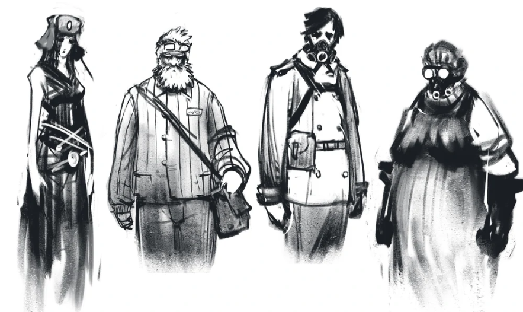

Жители
Общее понятие
Жители – люди (и не только), проживающие внутри пространств Гигахрущёвки. Каждый житель имеет свой небольшой жилой блок, оснащенный гермодверью. Жители Гигахруща – обычные среднестатистические люди (и не только). Неизвестно, сколько всего людей живет в Гигахруще. Также неизвестно, какие национальности там проживают, зависит ли это от их расположения в пространствах Гигахруща. Почти все жители являются (бывшими) гражданами Советского Союза.
Общие сведения
Жители имеют скудные места проживания, невкусную еду, заниженные условия жизни и ограниченные права. Подавляющее число жителей – затравленные, не уверенные в своем завтрашнем дне, угнетенные общей обстановкой Гигахрущевки. Они часто болеют, голодают, впадают в отчаяние. По неофициальным данным у большей части жителей глубокая депрессия. Многие из них имеют суицидальные мысли и наклонности. Среди жителей часто наблюдаются сошедшие с ума безумцы. На таких чаще всего докладывают ликвидаторам, после чего они забирают сумасшедших в неизвестные никому места.
Однако, как и в любом обществе, находятся и те, кто смотрят на жизнь позитивно, или же, по крайней мере, имеют надежду на светлое будущее. Естественно, в таких условиях проживания очень популярной становится религия, в которой жители находят спасение от суровой реальности.
Среди жителей весьма распространены различные теории, версии и слухи насчет того, что происходит в Гигахрущевке: от производства еды до самого существования Гигахруща и тайного высшего правителя этого комплекса. Чаще всего конспирации подвергается самосбор, ликвидаторы, и, конечно же, само строение Гигахруща
Неизвестно, сколько поколений люди уже живут в Гигахрущевке, однако по популярным теориям и воспоминаниям старожилов – количество "запертых" поколений варьируется от 3 до 7.